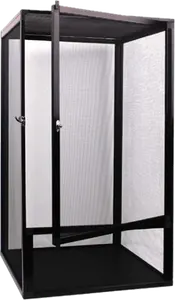
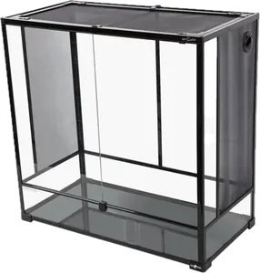
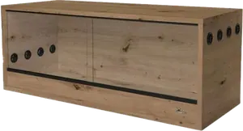
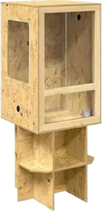
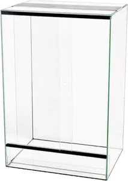

Vhodný typ terária
Parametry pro terárium
- Světlé pozadí – nejlépe jednobarevné bílé, ne barevné tapety či 3D stěny.
- Velmi vzdušné – zadržování vlhkosti vede k dýchacím a očním potížím.
- Otevírací dvířka – pro jednoduchou a bezpečnou manipulaci uvnitř ubikace.
- Výška – terárium musí být dostatečně vysoké pro umístění větví a rostlin.
- Omyvatelný materiál – jednou za čas je potřeba terárium umýt a vydezinfikovat.
Zcela nevyhovující jsou akvária či ubikace s nedostatečným prouděním vzduchu, tmavými stěnami, vyrobené z hrubých, nehygienických a nebezpečných materiálů.
Osobní tip: Doporučujeme sestavitelné terárium PT 50×50×100 cm či terárium Repti Planet 91,4×45,7×90 cm.
Pozor: Starší po domácku vyrobená terária mohou být z toxických materiálů či infikovaná a kontaminovaná bakteriemi a plísněmi.
Vhodné


Nevhodné


